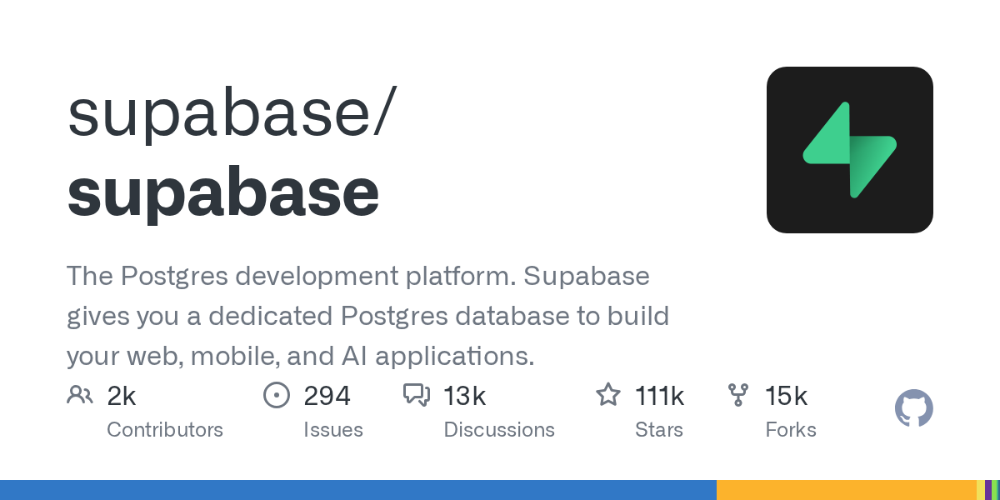
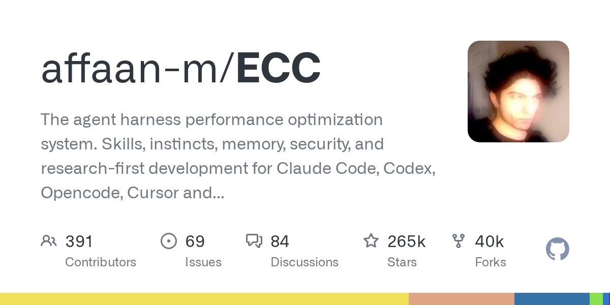
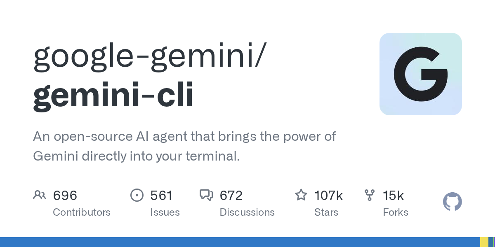
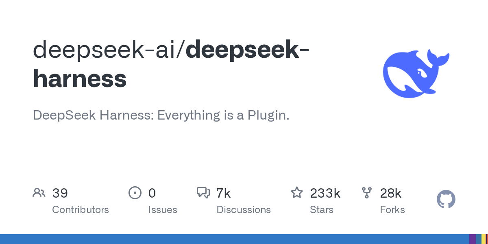
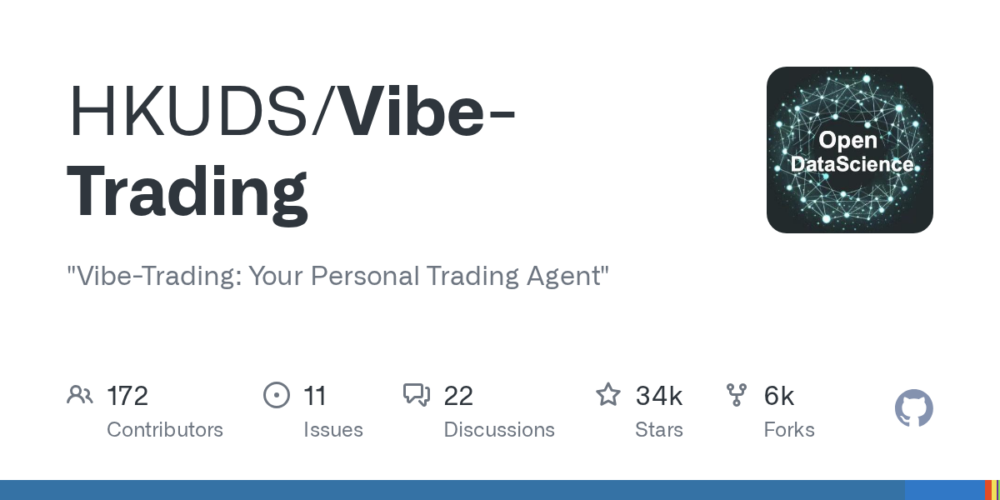
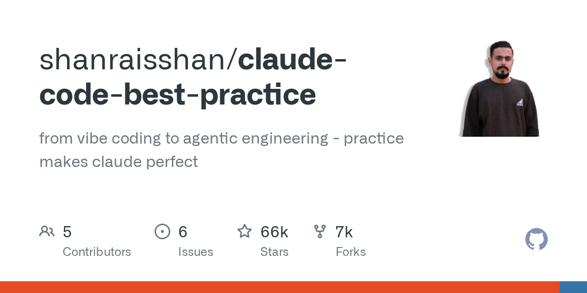

01 인프라·런타임 이번 호 머리기사
DB부터 인증·벡터 검색까지 한 번에
supabase/supabase는 Postgres를 중심으로 데이터베이스, 인증, 파일 저장소, 자동 API, 실시간 구독, AI·벡터 기능을 묶은 개발 플랫폼이다. 설치 없이 호스팅으로 시작할 수 있고, 자체 구축과 로컬 개발도 지원한다.

Weekly GitHub Brief
이번 주에는 코딩 에이전트를 보조하는 저장소가 많이 잡혔습니다. 작업 절차와 기억을 붙이거나, 플러그인으로 기능을 나누거나, 여러 에이전트를 나란히 돌려 비교하는 식입니다. 현장에서는 단일 도구의 성능보다, 어떤 절차를 고정하고 어떤 기능을 바깥으로 뺄지 정리하는 흐름이 강했습니다. 인프라 쪽은 로컬 실행과 DB·인증·벡터 검색을 한 묶음으로 다루는 저장소가 보였고, 사내에서는 먼저 로컬 모델 실행 환경을 시험해 보며 보안과 운영 부담을 함께 확인해 볼 만합니다.

Editor's Pick
01 인프라·런타임 이번 호 머리기사
supabase/supabase는 Postgres를 중심으로 데이터베이스, 인증, 파일 저장소, 자동 API, 실시간 구독, AI·벡터 기능을 묶은 개발 플랫폼이다. 설치 없이 호스팅으로 시작할 수 있고, 자체 구축과 로컬 개발도 지원한다.

05 에이전트·툴링
“Vibe-Trading은 시장 데이터 조회와 백테스트, 계좌 연결 기능을 한 명령으로 붙이는 트레이딩 에이전트 도구다.”
08 인프라·런타임
“Unsloth Start는 Claude Code, Codex 같은 에이전트를 로컬 모델에 한 번에 연결한다.”
이번 주 가장 뜨거웠던 저장소 하나를 골랐습니다. 아래 섹션에도 그대로 실려 있습니다.
google-gemini/gemini-cli
Gemini를 터미널에서 직접 쓰게 해 주는 오픈소스 명령줄 도구다.
“Google Search로 최신 정보를 붙여 답을 만들 수 있다. 대화 체크포인트를 저장해 긴 작업을 나중에 다시 이어갈 수도 있다. GitHub Action과도 연결해 풀리퀘스트 검토나 이슈 분류를 자동화할 수 있다.”
★ 107,130이번 주 +123TypeScriptApache-2.0 사내 사용 가능릴리스 v0.60.0 (09.15)최근 활동 09.22

지난 7일 동안 스타가 빠르게 늘었거나 새로 등장해 주목받는 저장소입니다.
affaan-m/ECC
코딩 에이전트에 계획, 테스트, 검토, 기억 기능을 붙이는 오픈소스 도구다.
“ECC는 에이전트가 코드를 쓰기 전에 계획을 세우고, 테스트로 바뀐 내용을 확인하며, 다른 맥락에서 자기 결과를 다시 검토하게 만든다. 같은 지시를 매번 프롬프트에 길게 적는 대신 한 번 설치해 작업 방식으로 굳힐 수 있다.”
★ 265,452이번 주 +6,116JavaScriptMIT 사내 사용 가능릴리스 v2.2.1 (09.08)최근 활동 09.22테스트예제AGENTS.md

deepseek-ai/deepseek-harness
DeepSeek AI가 만든 오픈소스 에이전트 도구다.
“DeepSeek Harness는 기능을 플러그인으로 붙여 쓰는 에이전트 도구다. 웹 화면을 로컬에서 띄워 실행할 수 있다. 이 도구가 없으면 필요한 기능을 한 덩어리 제품이 정한 방식대로 써야 하거나, 각 기능을 직접 이어 붙여야 한다.”
★ 233,427이번 주 +8,055TypeScriptMIT 사내 사용 가능최근 활동 09.22AGENTS.md

stablyai/orca
여러 코딩 에이전트를 병렬로 실행하고 결과를 비교·검토하는 오픈소스 도구다.
“Orca는 여러 코딩 에이전트를 병렬로 돌리고 결과를 비교하는 데스크톱 중심 도구다. 한 지시를 다섯 에이전트에 나눠 보내고, 각 결과를 분리된 작업 공간에서 비교한 뒤 하나를 고를 수 있다.”
★ 75,644이번 주 +6,092TypeScriptMIT 사내 사용 가능릴리스 v1.4.207 (09.22)최근 활동 09.23테스트예제AGENTS.md

에이전트 프레임워크, MCP 서버, 코딩 보조, LLM 앱 개발 도구입니다.
HKUDS/Vibe-Trading
거래 데이터 조회, 백테스트, 계좌 연결을 묶은 오픈소스 트레이딩 에이전트 도구다.
“Vibe-Trading은 시장 데이터 조회와 백테스트, 계좌 연결 기능을 한 명령으로 붙이는 트레이딩 에이전트 도구다. 시장 데이터와 전략 검증, 메시지 채널 설정, 포트폴리오 조회를 한곳에서 다루게 한다.”
★ 33,848이번 주 +336PythonMIT 사내 사용 가능릴리스 v0.1.15 (09.09)최근 활동 09.22

google-gemini/gemini-cli
Gemini를 터미널에서 직접 쓰게 해 주는 오픈소스 명령줄 도구다.
“Google Search로 최신 정보를 붙여 답을 만들 수 있다. 대화 체크포인트를 저장해 긴 작업을 나중에 다시 이어갈 수도 있다. GitHub Action과도 연결해 풀리퀘스트 검토나 이슈 분류를 자동화할 수 있다.”
★ 107,130이번 주 +123TypeScriptApache-2.0 사내 사용 가능릴리스 v0.60.0 (09.15)최근 활동 09.22
shanraisshan/claude-code-best-practice
Claude Code를 더 잘 쓰기 위한 실전 팁과 작업 방식, 예시 파일 위치를 모아 둔 참고 저장소다.
“일반 사용 팁 모음과 달리 이 저장소는 명령, 에이전트, 스킬을 어떻게 나눌지 구조부터 보여 준다. /weather-orchestrator 예시로 command → agent → skill 흐름을 실제 형태로 제시한 점이 눈에 띈다.”
★ 66,246이번 주 +297HTMLMIT 사내 사용 가능최근 활동 09.22

추론 서빙, 런타임, 양자화, GPU 커널, 벡터 DB 등 모델을 돌리는 바탕입니다.
supabase/supabase
Postgres를 중심으로 데이터베이스, 인증, 파일 저장소, 자동 API, 실시간 구독, AI·벡터 기능을 묶은 개발 플랫폼이다.
“Supabase Pipelines는 Postgres 변경 내용을 BigQuery로 거의 실시간 전송하는 관리형 CDC 서비스다. Unified Logs는 모든 서비스를 한 화면에서 검색하고 실시간으로 따라볼 수 있게 한다. Grafana Cloud 연결도 한 번 클릭으로 제공한다.”
★ 110,637이번 주 +1,298TypeScriptApache-2.0 사내 사용 가능릴리스 v1.26.08 (08.07)최근 활동 09.23예제AGENTS.md
unslothai/unsloth
사내 PC나 서버에서 AI 모델을 실행하고 학습시키는 데스크톱 앱과 웹 UI, 코드 기반 버전을 함께 제공한다.
“Unsloth Start는 Claude Code, Codex 같은 에이전트를 로컬 모델에 한 번에 연결한다. 같은 화면에서 모델 실행, 학습, 배포를 같이 다룰 수 있다. OpenAI 호환 API도 제공해 기존 도구를 크게 바꾸지 않고 붙일 여지가 있다.”
★ 76,595이번 주 +385PythonApache-2.0 사내 사용 가능릴리스 v0.1.814-beta (09.22)최근 활동 09.23테스트